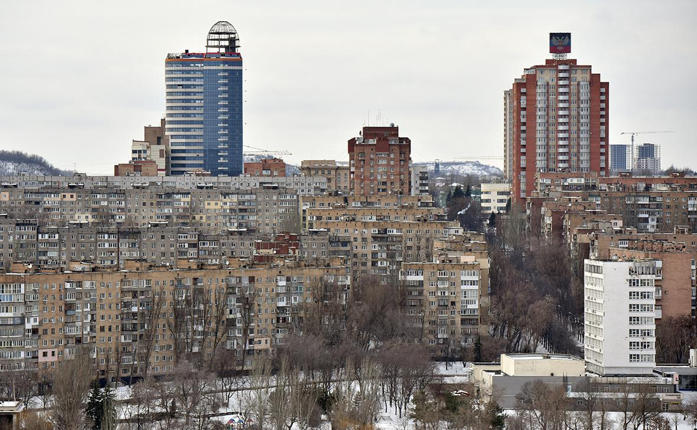
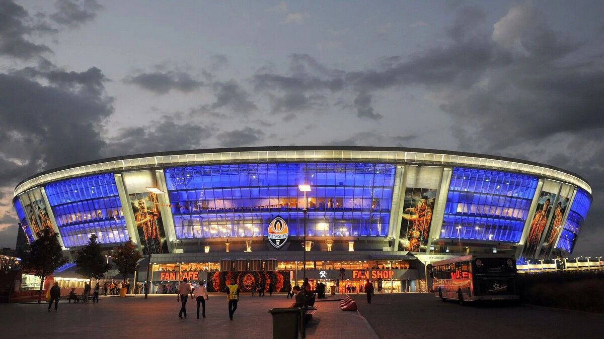
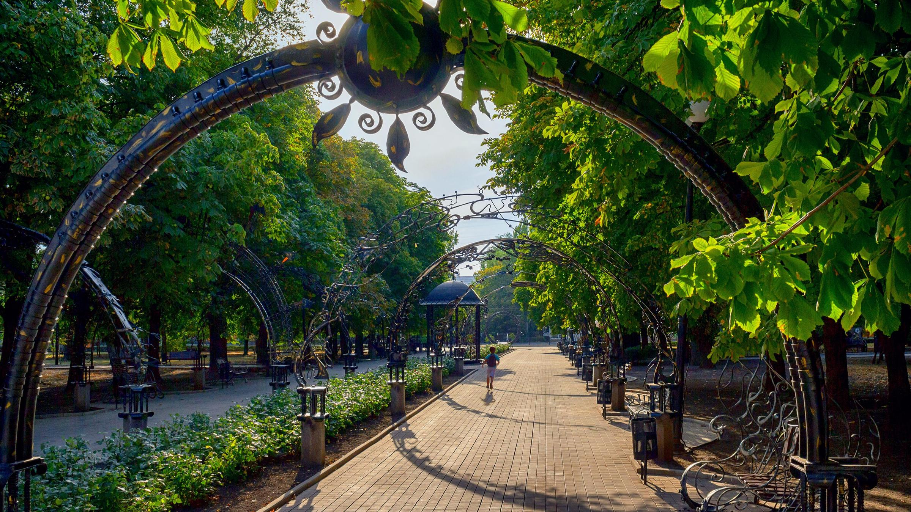
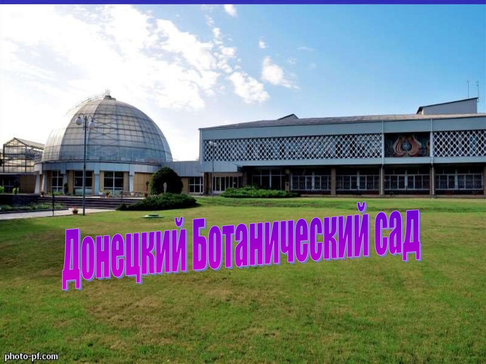
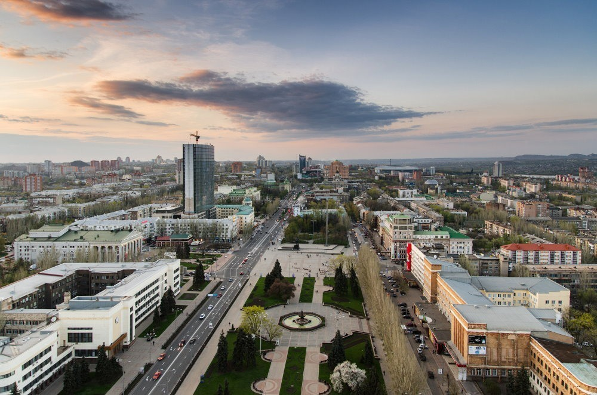
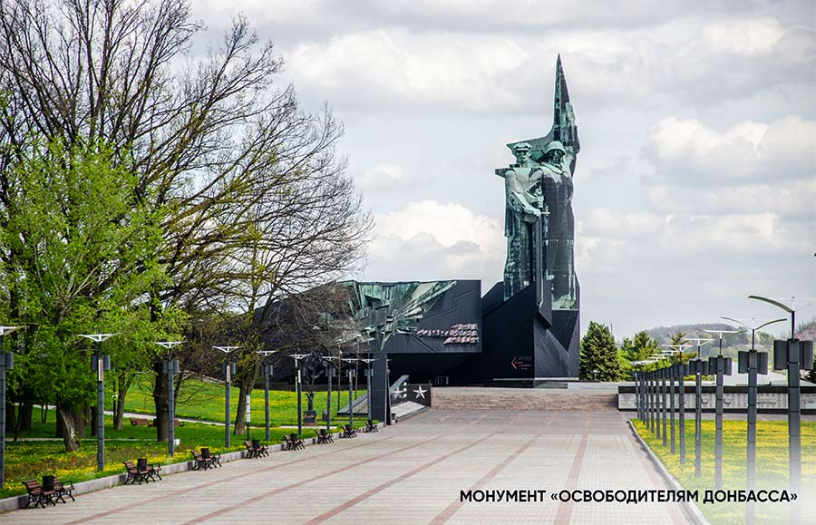

История города
В 1869 году началось формирование поселения Юзовка, из которого впоследствии вырос Донецк.
История, культура и достопримечательности

Донецк — крупный промышленный и культурный город, расположенный в восточной части Донецкого региона. Его история тесно связана с развитием угольной промышленности и металлургии.
Город был основан в 1869 году как Юзовка. В 1924 году он получил название Сталино, а в 1961 году был переименован в Донецк.
Донецк известен своими парками, архитектурой, спортивными объектами и культурными учреждениями. Среди известных достопримечательностей — парк кованых фигур, Донецкий ботанический сад и стадион «Донбасс Арена».





В 1869 году началось формирование поселения Юзовка, из которого впоследствии вырос Донецк.
В городе расположены театры, музеи, библиотеки и другие культурные учреждения.
Парк кованых фигур является одной из узнаваемых достопримечательностей Донецка.